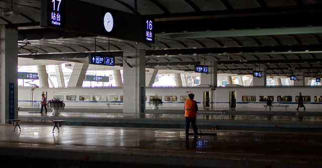
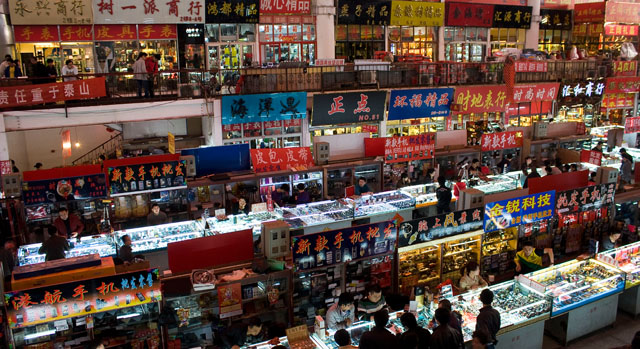
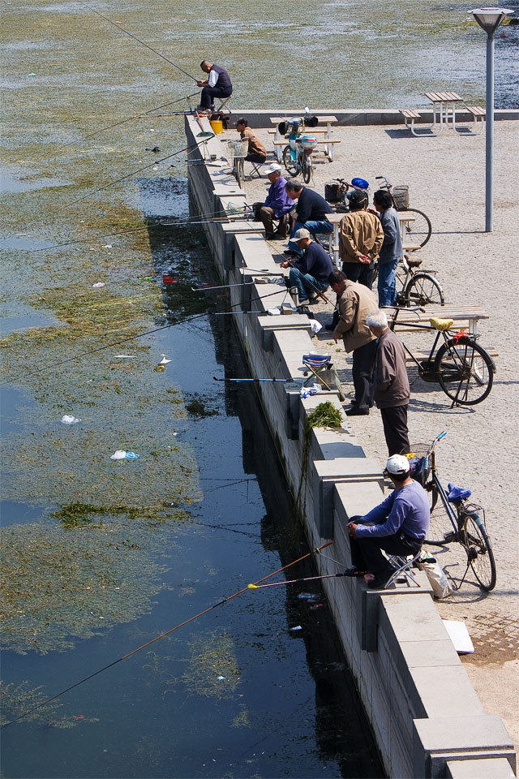
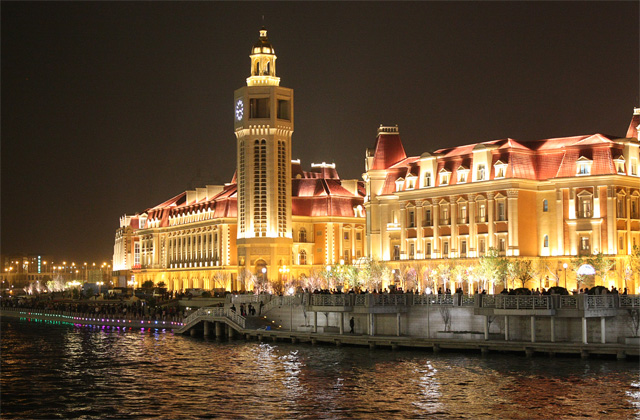

五一当天我们5点多就起床，为了赶第一班和谐号到塘沽，这是我们今年为止起得最早得一天。大概也是睡眠不足吧，影响了接下来一天的体力。回想一下我们一天都走了哪些地方，首先第一班和谐号的票就没买到，只能站着当热身了，还好时间不长。北京到天津实在太方便了，我琢磨着飞机还有人坐么。塘沽站下了车，我们就开始了暴走，第一站是当地的洋货市场，这时候太阳已经很高了，我们才发现今天热得要命，实在不是暴走的好天气。然后到塘沽港口海边，看到一大片工地，和一个小炮台遗址。随后坐高铁回到天津市区内，匆匆吃个午饭。随后开始从河东区，走到河西区，再走到和平区，把五大道风情旅游区转得差不多了，再一路往北走到南市食品街，还有鼓楼，古文化街。这个时候天色已黑。精疲力竭的我们解决了晚饭后，心中只有一个想法——回家，洗澡，睡觉。

和谐号到天津实在是很快很方便，就是票价贵了点，尤其当我们拿的是同价钱的站票。

洋货市场，里面有各式各样的小商品，以手机等数码小产品，皮包，手表，等为主。不知道是不是低价从海关截获的货物里进的。

海河边钓鱼的人们，河边漂着很多水草，一些生活垃圾也显得很抢眼。

天津火车站对面的夜景，以前租界时期留下來的房子还是挺有特色的。